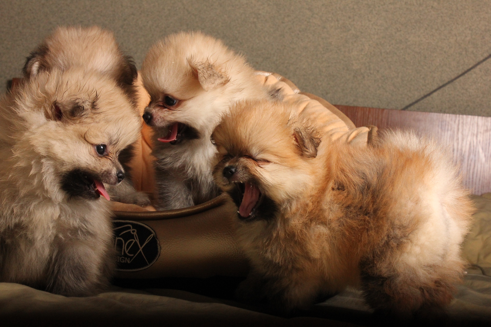
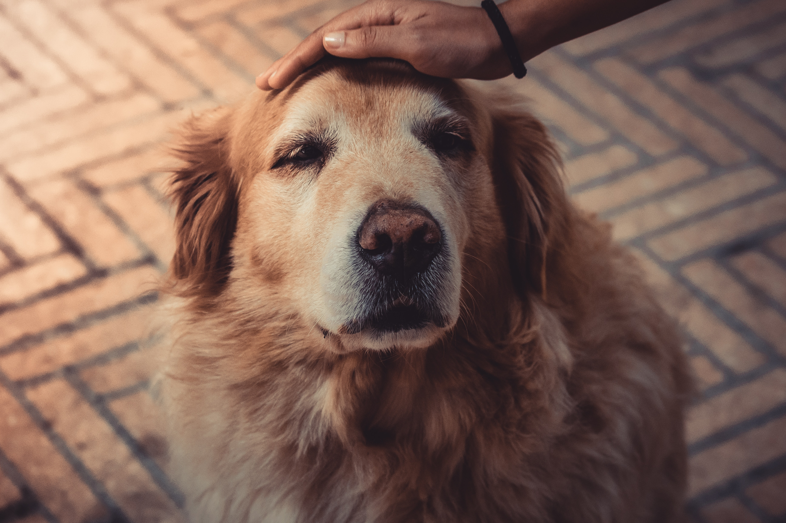

In the neonatal phase the puppy is still blind and movements are clumsy. By the usage of other
senses, he can reach his mother. He is slowly exploring surroundings and learning about behaviours of
his species, for example after reaching the wall of the pen, the puppy tries to climb on it, but it always
ends with a fall on the back. This negative experience teaches a small dog that he cant climb like a cat 1 .
At the end of this stage, the puppies are opening their eyes. When the puppy is 3 weeks old, comes the
first phase of the socialization. The puppy is more mobile and with curiosity is exploring surroundings. He
spends a lot of time on playing with his siblings and the mother. In this phase the dog is susceptible to
learning. It is very important that the breeder introduces to the litter different objects, noises, other dogs
(but only familiar ones, because puppies do not have vaccinations yet) and other people. If the
socialisation would not take place, there is a high risk of development of fears and even an aggressive
behaviour in the future. The correct guidance through the first socialisation phase is crucial and that is
why puppies must be bought from the reliable and checked breeder, who puts time and attention to his
dogs. As well, in this stage the puppy is developing his locomotor skills by playing social games with his
littermates. The puppies are trying to bite one another with the open mouths and they are sparring with
each other. Through the fighting play the puppy is learning as well the social skills and communication. In
this phase the caregiver should pay lots of attention to the litter and the mother, making sure they are
safe and sound. It is important to know what are the needs of the puppies and how to correctly handle
them. Once their eyes are opened, it is more important to slowly introduce them to the surroundings
than any kind of training. The puppies and the mother should stay in calm and relaxed environment. The juvenile period starts when the puppy is about 12 weeks old.He is already settled in his new
home. As well, once he is fully vaccinated, socialisation with other dogs and new situations should begin.
It is important that in the new home, contacts with the caregivers are positive and sympathetic. It is not
recommended to discipline the puppy with screaming or by means with physical punishments. The
teaching should happen by the calm guidance and positive reinforcement of good behaviours. During
this phase, the puppy should have only positive experiences, both with people and other dogs. This is the
time that the puppy should start toilet training. The best way to teach the dog to toilet outside is to
create the routine. We need to remember, that a 3 months old puppy should go out every 3 hours, this
interval will be longer, as the dog will grow up. The puppy should be taken out at the same times and
praised every time he would do his business there. Obviously, it can happen, that the puppy toilets at
home, but the caregiver should ignore this event not to cause a stressfull situation. Puppy wants to toilet
after eating, drinking, playing or after waking up 3 . I have managed to teach my puppy to toilet outside
using the routine and by observation of her behaviour. Once she understood that she needs to wee and
poop outside, she started to communicate with me, by sitting by the door. This behaviour should be praised with good words or a little snack. As I mentioned before, the puppies are playing with each other
using teeth. They are nipping in the play. If the game goes too far and one puppy is nipped too strong, he
would cry to let another know that it was too much. The puppy is also biting and chewing everything,
what he can find around him. When the puppy is chewing, in the canine brain happiness hormones are
released. It is also calming them down and allows to deal with emotions. This is why many dogs left
alone in the house bite furniture or other objects. The puppy might as well be nipping the owner during
the play. When the puppy nips the owner, the game should finish right away. It is essential to give him a
clear signal that this is not the way to play, otherwise this behaviour will be reinforced and he will be
playing in this way (some of the people that he will come across might not like it at all). To prevent
destructive behaviours at home, the puppy must have a choice of toys to bite all the time. If he would
still go for the furniture, we need to calmly redirect his attention on the toy. Punishing or screaming will
not bring any effect, the puppy would only learn to do it when his caregiver is not looking. During the
teething the puppy might want to chew even more 4 . Personally, I think that the best is to provide
different types of toys (some hard and some soft) and some natural teether, for example dried beef cow
stomach. As mentioned before, until the puppy is 16 weeks old, he should be intensively socialised.
Everything what he will see or experience won’t be a problem for him in the future. Once he is fully
vaccinated, he should be seeing as many dogs as possible, in different sizes and colours 5 . Contacts in
between dogs must be positive, but the puppy must learn the body language and the warning signals
from the other dogs at the same time. Some puppies are a bit shy and they would present submissive
behaviours towards other dogs. But others might not respect the boundaries and want to see how far
can they go. As an owner we need to be fully aware of the dog’s body language and prevent any kind of
dangerous situations. If the puppy is too pushy, wants to play all the time or is nipping the other dog,
and if the other dog is giving him signals that the play is over, it is the responsibility of the caregiver to
remove the puppy. If the older dog growls or snaps at the puppy, he should not be punished for his
communication. A few months ago, I bought a puppy and she was all over my older dog. But luckily, Mitzi
was very understanding towards the puppy and presented great communication skills. Jumping up is
another behaviour typical for the puppies. They want to get attention, reach our faces to be able to lick
them. Jumping up is also an effective way to cope with discomfort, for example when someone new
comes home 6 . Very often this issue is not addressed immediately, because the dog is still small, cute and
light. But once he reaches his full size and weight, it might not be so nice anymore. First of all, jumping
up should not be encouraged by the caregivers. If the puppy is jumping up, we can ignore him, or lean
towards him so he stays on four legs. When my puppy was jumping up, I was asking her to sit down and
praised her for doing it. With time she learnt that this behaviour pays better than jumping up. To prevent
her to jump on other people I have mastered the recall and when seeing her running to other people, I
would call her back and praise. It is very important to teach the dog a reliable recall as soon as possible.
As the dog hits puberty, the phase of escape starts as well. . Owning a puppy is a very beautiful
experience but can be also very tiering. Taking care of a 12 weeks old puppy is very similar to taking care of a human baby and this is the approach I would recommend to the new caregivers. They have to pay
attention to the signals and communication of the dog and be very patient. From one side it is not good
to ignore unwanted behaviours but from the other side, it is crucial that the caregivers react to these
behaviours in the correct way. Acting in frustration or using the punishment system will backfire later on,
when the puppy will hit adolescence or maturity. Directing the puppy on wanted behaviour might cost
more time but is also more effective. For the new caregivers I would recommend to focus on building
strong, and based on the trust bond with the dog, because this foundation will make it much easier later
on. The dog that has a great bond with his caregiver will more likely listen to him. 8 What is also very
important is the rest time. The puppy sleeps even 18 hours per day and the caregiver needs to make sure
that in the household there is a safe space where the dog can rest. It is not good to give the puppy
constant attention because this can build in him arousal and he will not be able to rest calmly. It has
been proven, that the amount of sleep impacts the behaviour of the dog. With every week the puppy feels more comfortable, his self-esteem grows and he understands
that there is much more to discover. He also discovers that when called back, he can run in other
directions. Phases of escaping start around the 6th month and is very dangerous, because the dog might
escape and not be able to come back home. It can be also connected with the mating urge. When
dealing with the puppy escape artist it is important not to punish the dog for his actions because he
might think, that coming back is the behaviour that is causing him negative experiences 9 . Some people
are also compromising walking off the leash, but the dog that does not train recall, will forget it. I would
recommend to keep training the dog but at the same time make sure that he stays safe and sound. The
best solution is to buy the training line and keep mastering recall in different places and with more and
more difficult stimulus. It is helpful to have a bag full of treats (I am using special treats only for recall, so
they stay special. Training with the whistle as an emergency recall and STOP command will help as well.
Being consistent, positive and calm will eventually bring the effects. Puberty is a very challenging phase,
when the puppy is becoming rebellious, might not listen so well anymore or even do opposite of what
we are asking. Large hormonal changes in his brain and the body during this period might cause
excessive or even incomprehensible reactions and behaviours. The owner's behaviour during this time
can affect behaviour of the dog in his adulthood. The owner of a 6 months old puppy needs to be
prepared for a few months that can be challenging and the understanding of processes that occur in the
dog’s body is very crucial.If the dog behaves in an unwanted way,it is not because he is a bad dog or he
wants to make his caregiver angry, but it is because of the hormones. Again, it is very similar to what
human teenagers are experiencing and the caregivers needs to be patient and supportive towards their
puppy. Calm guidance needs to be consistent and the rules clear for the dog. Compromising the positive
reinforcement training that was done until this phase will impact the behaviour of the dog for ever. It is
crucial to keep reinforcing positive behaviours and praising them even more than before.During the
hormonal stormthat is happening in the body of the dog, he might display mounting behaviours. It can
happen that the dog mounts the human leg, pillow, other dog or a toy. This kind of behaviour brings
relief to the dog in stressful situations, but over time it can become a habit as a response to stress. To prevent fixation, it is important to react in a calm but firm way. If the dog mounts the leg, calm off and
walking away is the best solution. The caregiver can also try to redirect his attention and ask to sit down
and wait for a few seconds. Pushing the dog away with the hand or any other emotional reaction will
feed his need of attention and encourage it in the future. Separation anxiety is another behavioural
challenge that can occur during the adolescence. If the dog is experiencing extreme stress during the
caregiver´s absence it is a sign that the issue should be addressed. It is not clear what exactly is causing
the separation anxiety, I think that it might be caused by a lack of socialisation, sudden changes in the
life of the puppy or previous traumatic experiences. The dog is able to recognise our actions when we
are going to leave home. During the preparation he might phase, run to the door, require attention, after
being left alone cry, howl or urinate. To treat this issue, we need to train the puppy by using
desensitization and counter-conditioning. It is good to create a routine before we leave home, starting
with easy training, for example leaving the puppy in another room for a few seconds. As the puppy starts
to feel comfortable, this time can be prolonged and we can start leaving him home alone. Chewers and
toys like a Kong can help in unloading the emotions. Training can be very long; it is important to stay
patient and prolong the time very slowly. The caregivers of an adolescent dog will experience many
different behaviours and set backs in the training, but if the approach is calm and correct, it is possible to
work through unwanted behaviours. I would also recommend lots of exercise and enrichment games to
makes sure that the puppy is physically and mentally developing correctly. Socialisation and the impulse
control training should be continued so the puppy can learn how to handle his emotions and work on his
social skills. The puppy should have enough undisturbed time to rest and sleep to recover his energy.
The dog achieves maturity from 12 to 18 months old. His place in the household and the social
group is settled. If the dog was well socialised and his negative behaviours were not reinforced, this
phase will come naturally. If the behavioural issues during the puppyhood were not addressed, the adult
dog might try to subordinate other household members or become reactive or even aggressive.
Reactivity can include lunging, barking or growling at other dogs, objects or people. If the dog displays
these behaviours, the caregivers need to introduce him to the stimulus that makes him reactive. First,
from a distance and then as the dog would remain calm, this distance should be reduced. If there is an
issue with other dogs, the caregivers should find a dog school that offers passing by classes and practice
calm passing by next to other dogs.Clear instructions and positive reinforcement,impulse control and
protection will help the dog to work on his reactivity 10 . If the dog was handled correctly during this
puppyhood, he will calm down his emotions and become predictable. The caregivers need to remember
that the dog is already adult, but he still needs guidance, exercise, positive reinforcement and
socialisation. Raising a dog does not end with the adolescence.
Elderly dogs require a lot of attention and empathy from their caregivers. The signs of getting
older is lowered activity and appearance of grey hair, he spends more time on resting, snoozing and
sleeping. He must have a secured comfortable and safe spot to rest which is easily accessible. The older
dog might still be active, but he has a reduced desire to run, jump or drag due to the issues with moving.
Often an older dog has worse smell, hearing or vision. There may also be initial symptoms of dog
dementia, he might seem confused or spaced out. Older dogs are more likely to have various diseases.
The most common is degeneration of the joints and spine. To protect his joints, he should not be using
the stairs but the elevator if its possible (if not, it is better to carry the dog). Very important is as well the
dental care and a balanced diet. Due to the loosening up of the muscles, the dog might be toiletting at
home. If this is happening, the caregivers can use puppy pads that are easy to remove in case of
urination or defecation. He should never be punished for the behaviours which are the result of his age.
The elderly dog needs a calm environment, regular vet check-ups and lots of love and understanding


×

×


×